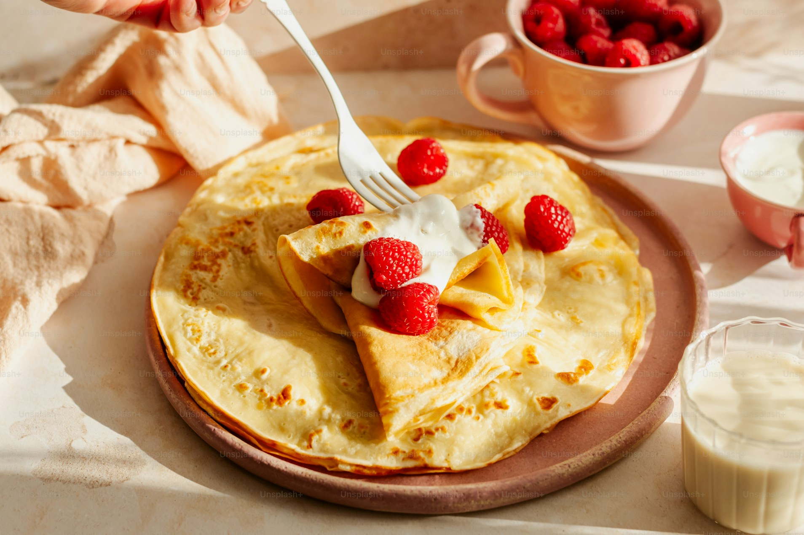
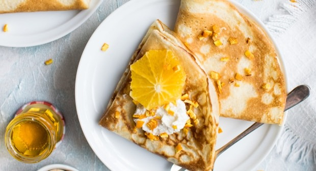

Enkelt recept på pannkakor
Hoppa till receptetGör traditionella tunna pannkakor med detta enkla och goda pannkaksrecept
- Mängd
- 4 portioner
- Tidsåtgång
- 30 minuter
- Svårhetsgrad
- Lätt
Ingredienser
Så här gör du
- Blanda mjöl och salt i en bunke.
- Vispa i hälften av mjölken och vispa till en slät smet.
- Vispa i resten av mjölken och äggen.
- Låt smeten vila ca 10 minuter.
- Stek tunna pannkakor i lite smör, för varja pannkaka, i en stek- eller pannkakspanna.
- Servera med sylt, bär eller frukt.
Serveringsförslag

Med sylt & grädde
